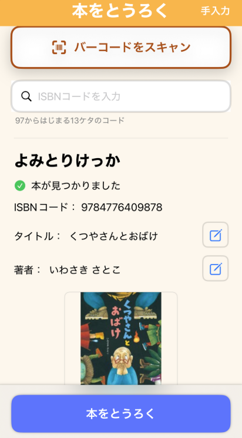

1 アプリを開いて「とうろく」へ
ホーム画面右下のボタンからバーコードスキャンを開始します。

バーコードでサクッと登録、スタンプラリーで楽しく継続。ここでは最短で始められる基本操作を紹介します。
ホーム画面右下のボタンからバーコードスキャンを開始します。
ISBN（978 / 979 で始まるコード）にカメラを合わせます。うまく合わないときは明るい場所で再トライ。
タイトルや著者名を確認して登録。登録に成功するとスタンプが1つ増えます。
登録後に誤りに気づいたら、本の詳細画面からタイトル・著者名・メモ（プレミアム）を編集できます。
りれき画面の検索ボックスで、タイトルや著者名を入力して絞り込みができます。
データ画面では、月ごとの登録数・お気に入り数・累計登録数などをグラフで確認できます。